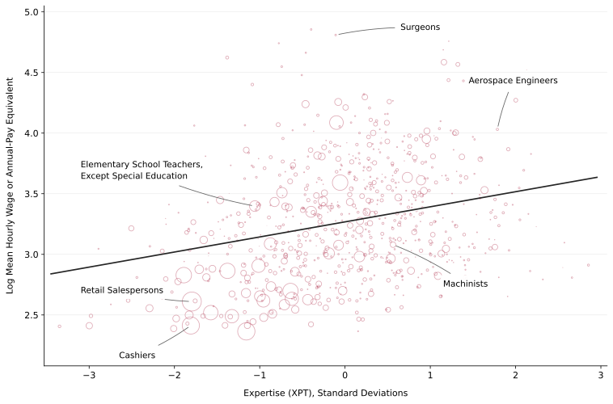

Replicating Expertise: Tasks, Words, and Wages
Why do some jobs pay more than others? Education and experience matter, but so does the work a job involves. This project asks whether occupations whose tasks use more specialized vocabulary also tend to have higher wages.
Here is how I built the comparison, starting with written task descriptions and ending with the wage regressions. The pattern is positive across 752 occupations, but it describes a relationship across jobs. It does not estimate the effect of gaining expertise on an individual worker's pay.
The Data
Start with Tasks, Words, and Wages
The analysis brings together three sources. Each one supplies a different piece of the comparison.
Source What We Use Why We Need It O*NET 23.0 Written task statements and occupation codes Describe the work people perform SUBTLEX-US Word frequencies from American film and television subtitles Provide a reference for everyday language May 2018 OES National mean wages and employment Attach pay and occupation size to the task measures O*NET provides 19,636 task–occupation records for 974 titles with descriptions. The OES file has 808 detailed occupation records before matching and final restrictions. Both occupational files use the 2010 SOC classification, even though the observations refer to 2018.[1]How the Data DifferThe original paper also uses historical task data and Census/ACS wage data. This single-year replication uses the three sources listed here.
The Task Text
Put Different Word Forms on the Same Basis
Before looking up frequencies, I lowercase the task text, remove common stop words, keep alphabetic tokens, and lemmatize the words using spaCy. Lemmatization brings forms such as “cards” back to “card.”
Before: CashiersReceive payment by cash, check, credit cards, vouchers, or automatic debits.
After Lemmatizationreceive, payment, cash, check, credit, card, voucher, automatic, debit
This step makes the descriptions more comparable. It also makes choices about language, so I keep the cleaned words and unmatched-word counts in the analysis files rather than treating the processing as invisible.
The Word Scores
Use Everyday Language as the Reference
The basic idea is straightforward: specialized task descriptions may use words that appear less often in everyday language. SUBTLEX gives every occupation the same reference, rather than defining a word as rare only because few other occupations use it.
Equation 1Turn Word Frequency into a Score
Words that appear more often receive higher scores. At this stage, the scale runs in the opposite direction from expertise. The constants put word frequencies on the class lookup’s scoring scale. Adding 1 makes the logarithm work even at a frequency of zero, because log₁₀(1) is zero. Adding 4 moves the log score up by four before the final multiplication, which adds 40 points to the resulting score. Multiplying by 10 sets the units: a one-unit difference in the base-10 logarithm becomes a ten-point score difference.
For example, frequencies of 0, 9, and 99 per million give scores of 40, 50, and 60. These are examples of how the formula works. The constants are fixed choices from the class lookup, rather than values estimated from wages. The +1 matters especially for low-frequency words because it changes their relative spacing. The formula applies to words with a lookup entry; unmatched words follow the separate rule below.
If a word is missing from the lookup, the class specification assigns it 35. This keeps the word and treats it as relatively specialized. In the cleaned task text, 2,892 of 185,034 retained word occurrences are unmatched, or 1.56%.
A rare word is not automatically evidence of difficult work. It could also reflect industry vocabulary or a text-processing problem. Later, I check what happens when unmatched words are left out.
The Occupation Scores
Combine the Tasks Before Matching Wages
First, I average word scores within each task. Then I average those task scores within each O*NET title. Each task counts equally in the main measure.
Equation 2Average the Words Within a Task
Each task gets one mean score. A longer description does not automatically give that task more weight when tasks are combined. For the cashier statement above, the raw task score is 52.82. That is one task score, not the final expertise score for the occupation.
One Wage Record Can Cover Several O*NET Titles
O*NET sometimes divides a six-digit SOC occupation into more specific titles. I average the title scores within the parent SOC code before adding its OES wage and employment record. Each title gets equal weight because employment shares within the specialties are unavailable.
Why merge in this order? If two O*NET titles share one OES occupation, attaching its full employment total to both would count those workers twice. Aggregating first keeps one employment record per SOC occupation.
This produces 775 SOC expertise scores. Requiring a valid score, positive wage, and positive employment after matching leaves 752 occupations, covering 139,021,510 jobs, or 96.1% of national OES employment. OES does not cover every worker, including the self-employed.
The Expertise Scale
Make the Scores Easier to Compare
Raw word-frequency scores are awkward to interpret, and lower values point toward more specialization. Standardizing the occupation scores and reversing their sign solves both problems.
Equation 3Make Higher Values Mean More Expertise
Subtract the sample average, divide by the sample standard deviation, and reverse the sign. Example: suppose the sample mean were 50 and the standard deviation were 5. An occupation with a raw score of 45 would have expertise −(45 − 50) / 5 = 1. These are illustrative values, not the sample's actual mean and standard deviation.
A score of zero is the sample average. A score of one is one standard deviation above average. A negative score does not mean a job requires no skill; it means its vocabulary-based score falls below the sample average.
The Wage Measure
Use Hourly Pay, Then Take Its Log
I use the published mean hourly wage when it is available. If it is unavailable but a positive annual mean is reported, I divide annual pay by 2,080. Censored wage entries stay missing.
Example: annual pay of $41,600 becomes an hourly equivalent of $20. This is a conversion, not evidence that people in that occupation actually work 2,080 hours. The baseline has 56 converted occupations; the later checks also use published hourly wages only.
Equation 4Put Wages on a Log Scale
The wage is logged; the expertise measure is standardized, not logged. I use the natural log because wages are skewed and proportional differences are easier to compare on this scale. For example, doubling pay from $10 to $20 changes log wages by the same amount as doubling it from $20 to $40: ln(2). The fitted coefficient can then be expressed as a percentage using 100 × (exp(β) − 1). The input is an occupation's mean wage, so this is still different from averaging individual workers' log wages.
The Regression
Compare Equal Occupation Weights with Employment Weights
At this point, wages and expertise have already been constructed. The regression uses those known values to estimate how they move together.
Equation 5Fit the Expertise–Wage Relationship
Use the known expertise and wage measures to estimate a starting level and a slope. Ordinary least squares, or OLS, chooses the line that makes the squared differences between observed and fitted log wages as small as possible. Each occupation counts equally. The employment-weighted version gives more influence to occupations that represent more workers.
Both models use the same 752 occupations and the same expertise scale. The weights change which observations influence the fitted line most. The main models have no education or other controls.
The standard errors use the HC1 adjustment, which allows unexplained wage variation to differ across occupations. It does not correct measurement problems or account for omitted job characteristics.
The Results
Higher Measured Expertise Is Associated with Higher Wages
The fitted line slopes upward. The points still spread widely around it, which is a useful reminder that similar expertise scores can come with very different wages.

Each circle is one SOC occupation. Circle area is proportional to employment. The line is unweighted OLS. Wages include flagged annual-pay equivalents. Measure Unweighted Employment-weighted Expertise coefficient 0.124 0.294 HC1 standard error 0.016 0.027 Constant 3.268 3.226 Constant HC1 standard error 0.017 0.036 Occupations 752 752 R² 0.070 0.308 Adjusted R² 0.069 0.307 The unweighted coefficient is 0.124. A one-standard-deviation increase in expertise is associated with 0.124 more log wage points. Using 100 × (exp(β) − 1), this corresponds to about 13.2% higher wages.
With employment weights, the coefficient rises to 0.294, or about 34.1%. The relationship is stronger when occupations employing more people have more influence. This does not mean increasing an individual worker's expertise would raise their wage by that percentage.
The unweighted model has R² = 0.070.
The unweighted R² is 0.070, compared with 0.308 under employment weights. These describe model fit under different weights; they do not measure how much wage determination is caused by expertise.
The Occupations
Look Within Broad Types of Work
The overall line is useful, but comparing occupations within a broad group helps make the measure more concrete. I order occupations by expertise and find where cumulative employment first reaches 25% and 75% of each group's total.
Occupations at Lower and Higher Expertise Percentiles Group 25th Expertise Percentile 75th Expertise Percentile All occupations Combined Food Preparation and Serving Workers, Including Fast FoodXPT -1.16 · log wage 2.36 Maintenance and Repair Workers, GeneralXPT 0.17 · log wage 2.98 Office and Administrative Support Customer Service RepresentativesXPT -1.38 · log wage 2.86 Library Assistants, ClericalXPT -0.58 · log wage 2.63 Sales and Related CashiersXPT -1.81 · log wage 2.41 Sales Representatives, Wholesale and Manufacturing, Except Technical and Scientific ProductsXPT -0.74 · log wage 3.51 Food Preparation and Serving Related Waiters and WaitressesXPT -1.57 · log wage 2.52 Food Preparation WorkersXPT -0.95 · log wage 2.48 Transportation and Material Moving Railroad Conductors and YardmastersXPT -1.19 · log wage 3.46 Laborers and Freight, Stock, and Material Movers, HandXPT -0.64 · log wage 2.70 Healthcare Practitioners and Technical Medical Records and Health Information TechniciansXPT -0.21 · log wage 3.05 Nurse PractitionersXPT 0.28 · log wage 3.97 Management General and Operations ManagersXPT -0.10 · log wage 4.09 Compensation and Benefits ManagersXPT 0.47 · log wage 4.16 Education, Training, and Library Elementary School Teachers, Except Special Education*XPT -1.06 · log wage 3.40 Special Education Teachers, Middle School*XPT -0.35 · log wage 3.43 The overall sample and seven largest SOC major groups are shown. These are employment-weighted expertise percentiles, not wage percentiles. The reported wage belongs to the selected occupation. An asterisk marks an annual-pay equivalent.
In sales, the selected higher-expertise occupation also has a higher wage. In office and administrative support, the comparison goes the other way. The overall positive association is not a rule for every pair of jobs.
Explore the Data
Find an Occupation
Look up a job you know and see where it falls. Search the actual baseline sample by occupation name or SOC code. The expertise score is relative to the sample average, and employment is the occupation's OES total.
Click a column heading to sort. Click again to reverse the order. Sorting applies to all matching occupations, across every page.
The Checks
See Whether the Main Choices Change the Pattern
Some construction choices are unavoidable, so I repeat the analysis under alternatives. This helps show whether the positive relationship depends entirely on a particular wage conversion, missing-word rule, or task-weighting decision.
Expertise Coefficients Under Alternative Choices Specification Occupations Unweighted Employment-weighted Published hourly wages only 696 0.130 0.305 Exclude unmatched words 752 0.130 0.288 O*NET .00 titles only 684 0.117 0.290 Rated tasks, equal weights 750 0.124 0.294 Rated tasks, importance weights 750 0.125 0.293 SOC major group controls 752 0.057 0.137 Each score is standardized within that specification's final sample. Rated-task comparisons use the same tasks with usable importance ratings. Coefficients are descriptive associations.
Removing annual-pay conversions leaves 696 occupations, and both coefficients stay positive. Excluding unmatched words and using task importance weights also preserve the direction of the relationship. These checks sometimes change the sample as well as the score, which matters when comparing their results.
Adding SOC major group indicators reduces the coefficients to 0.057 unweighted and 0.137 employment-weighted. Part of the larger bivariate relationship therefore comes from differences between broad types of work. A positive association remains within groups.
The baseline coefficients also stay positive when one major group at a time is left out. These checks support the pattern, but they do not prove the expertise proxy is free from measurement error.
What This Means
A Useful Pattern, with a Narrower Claim
The main result is that occupations with more specialized task vocabulary tend to pay more. That supports one descriptive part of Autor and Thompson's framework.
It does not reproduce their full expertise measure or their historical automation analysis. The original word measure uses information about frequency and how words are distributed across subject areas, together with a readability adjustment. SUBTLEX frequency is the simpler class approximation used here.
Education, licensing, experience, industry, labor demand, and working conditions could affect both the task descriptions and pay. A subtitle-frequency score cannot capture all of that. More specialized wording is not the same thing as a complete measure of a job's difficulty or a worker's ability.
What I take from the project is how much the construction matters. Matching at the wrong occupation level can repeat employment, a missing-word rule can change expertise rankings, and an annual-pay conversion can change the wage sample. Keeping those decisions visible makes the result easier to understand and check.
My Replication Paper
The paper link will be added here.
Original Sources
- O*NET database releases — version 23.0 task descriptions and occupation information.
- SUBTLEX-US — general-language word frequencies.
- May 2018 national OES estimates — wages and employment by occupation.
- Autor and Thompson, “Expertise” — the original paper that motivates the class replication.